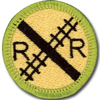

Railroading - In-Person Class Notes
Please arrive with ample time prior to the start time of your class for registration. Remember, there will be others checking in as well that registration may take a little time, depending on the size of the class and the event held in conjunction with the class.
Your Scout uniform is required to be worn when attending this merit badge session. If you have any additional questions, please feel free to contact Brian Reiners (Scoutmater Bucky) via email at scoutmasterbucky@yahoo.com or on the phone at 612-483-0665.
Reviewing the merit badge pamphlet PRIOR to attending and doing preparation work will ensure that Scouts get the most out of these class opportunities. The merit badge pamphlet is a wealth of information that can make earning a merit badge a lot easier. It contains many of the answers and solutions needed or can at least provide direction as to where one can find the answers.
It is NOT acceptable to come unprepared to a Scoutmaster Bucky event. You can (and should) use the Scoutmaster Bucky Railroading Merit Badge Workbook to help get a head start and organize your preparation work. Please note that the use of any workbook is merely for note taking and reference. Completion of any merit badge workbook does not warrant, guarantee, or confirm a Scout's completion of any merit badge requirements.
It should be noted that this merit badge class is not meant for those who just want to come and see what they can get done. It is possible to complete this merit badge by being properly prepared and having done the preparation work prior to the class. Preparation is a MUST! If you are not willing to participate to these expectations and standards, perhaps the Scoutmaster Bucky opportunity is not for you.
Things to remember to bring for this merit badge class:
- Merit badge blue card properly filled out and signed off by your Scoutmaster
- Railroading Merit Badge Pamphlet
- Scout uniform
- Supporting documentation or project work pertinent to the Railroading merit badge, which may also include a merit badge workbook for reference with notes
- A positive Scouting focus and attitude
Please read and understand the Scoutmaster Bucky Blue Card Process.
Railroading - Online Class Notes
Please arrive with ample time prior to the start time of your class to ensure your connection to the online session is working properly. Ask people in your household to refrain from unnecessary internet usage, including but not limited to: streaming videos, online gaming, and other heavy bandwidth usage.
You will receive a link 12 to 24 hours before the class start time. Notification will come through the email address provided during the registration process, so please make sure you enter your email correctly.
Your Scout Uniform is required to be worn when attending this Online Merit Badge session. If you have any additional questions, please feel free to contact Brian Reiners; Scoutmaster Bucky via email at scoutmasterbucky@yahoo.com or on the phone at 612-483-0665.
Reviewing the Merit Badge Pamphlet PRIOR to attending and doing preparation work will insure that Scouts get the most out of these online class opportunities. The Merit Badge Pamphlet is a wealth of information that can make earning a Merit Badge a lot easier. It contains many of the answers and solutions needed or can at least provide direction as to where one can find the answers.
It is NOT acceptable to come unprepared to a Scoutmaster Bucky event. You can (and should) use the Scoutmaster Bucky American Business Merit Badge Workbook to help get a head start and organize your preparation work. Please note that the use of any workbook is merely for note taking and reference. Completion of any Merit Badge Workbook does not warrant, guarantee, or confirm a Scouts completion of any merit badge requirement(s). You can download the Scoutmaster Bucky Railroading Merit Badge Workbook for taking notes to help you prepare.
It should be noted that this Merit Badge class is not meant for those who just want to come and see what they can get done. It is possible to complete this Merit Badge by being properly prepared and having done the preparation work prior to the class. Preparation is a MUST! If you are not willing to participate to these expectations and standards, perhaps the Scoutmaster Bucky opportunity is not for you.
Railroading
Merit Badge
2021 Scouts BSA Requirements

Please make sure you read the top portion of this page for general participation expectations in a Scoutmaster Bucky merit badge class.
Pay careful attention to the action verbs within the requirements. An example to note:
"Tell", "explain", "describe", and "discuss" are commonly used and will require the Scout to perform these actions during the class. When these action verbs are a part of any requirement, Scouts are expected to be prepared to share. Reading responses is not acceptable since it does not fulfill the requirement of showing the Scout's knowledge and understanding.
1.
Do THREE of the following:
(a)
Name three types of modern freight trains. Explain why unit trains are more efficient than mixed freight trains.
(b)
Name one class I or regional railroad. Explain what major cities it serves, the locations of major terminals, service facilities, and crew change points, and the major commodities it carries.
(c)
Using models or pictures, identify 10 types of railroad freight or passenger cars. Explain the purpose of each type of car.
(d)
Explain how a modern diesel or electric locomotive develops power. Explain the terms dynamic braking and radial steering trucks.
2.
Do the following:
(a)
Explain the purpose and formation of Amtrak. Explain, by the use of a timetable, a plan for making a trip by rail between two cities at least 500 miles apart. List the times of departure and arrival at your destination, the train number and name, and the types of service you want.
(b)
List and explain the various forms of public/mass transit using rail.
3.
Do ONE of the following:
(a)
Name four departments of a railroad company. Describe what each department does.
(b)
Tell about the opportunities in railroading that interest you most and why.
(c)
Name four rail support industries. Describe the function of each one.
(d)
With your parent's and counselor's approval, interview someone employed in the rail industry. Learn what that person does and how this person became interested in railroading. Find out what type of schooling and training are required for this position.
4.
Explain the purpose of Operation Lifesaver and its mission.
5.
Do THREE of the following:
(a)
List five safety precautions that help make trains safer for workers and passengers.
(b)
Explain to your merit badge counselor why safety around rights-of-way is important.
(c)
List 10 safety tips to remember when you are near a railroad track (either on the ground or on a station platform) or aboard a train.
(d)
Tell your counselor about the guidelines for conduct that should be followed when you are near or on railroad property. Explain the dangers of trespassing on railroad property.
(e)
Tell what an automobile driver can do to safely operate a car at grade crossings, and list three things an automobile driver should never do at a grade crossing.
(f)
Tell how to report a malfunction of grade crossing warning devices.
(g)
List safety precautions a pedestrian should follow at a public crossing.
6.
Explain the appearance and meaning of the following warning signs and devices: advance warning sign, pavement markings, crossbucks, flashing red lights, crossing gates.
7.
Do EACH of the following:
(a)
Explain how railroad signals operate and show two basic signal types using color or configuration.
(b)
Explain the meaning of three horn signals.
(c)
Describe a way to signal a train for an emergency stop.
(d)
Explain the use and function of the EOTD (end-of-train device) or FRED (flashing rear end device) used on the last car of most trains.
8.
Select ONE of the following special-interest areas and complete the requirements.
(a)
Model Railroading
With your parent's and counselor's approval, do TWO of the following:
(1)
Draw a layout of your own model railroad or one that could be built in your home. Design a point-to-point track or loop with different routings. Include one of the following: turnaround or terminal or yard or siding.
(2)
Build one model railroad car kit or one locomotive kit.
(3)
Name the scale of four popular model railroad gauges. Identify the scale of four model cars or locomotives.
(4)
Locate the Web site of four model railroad – related manufacturers or magazine publishers. Print information on their products and services and discuss the information with your counselor.
(5)
Build one railroad structure (from scratch or using a kit), paint and weather the structure, mount it on your layout or diorama, and make the surrounding area on a diorama scenic.
(6)
Alone or with others, build a model railroad or modular layout including ballast and scenery. Make electrical connections and operate a train. Describe what you enjoyed most.
(7)
Participate in a switching contest on a timesaver layout and record your time.
(8)
Explain the difference between powering and controlling a model railroad by using direct current, and powering and controlling a model railroad using digital command control.
(b)
Railfanning
With your parent's and counselor's approval, do TWO of the following:
(1)
Visit a railroad museum, historical display, or a prototype railroad-sponsored public event. With permission, photograph, videotape, or sketch items of interest. Explain what you saw and describe your photos, sketches, or videotape.
(2)
Purchase tickets and ride a scenic or historic railroad. Under supervision, photograph the equipment and discuss with your counselor the historic significance of the operation.
(3)
Locate the Web site of four rail historical groups, then find information on the history of the rail preservation operations and purpose of each group. Talk with a member of one of the groups and find out how you might help.
(4)
Plan a trip by rail between two points. Obtain a schedule and explain when the train should arrive at two intermediate points. Purchase the tickets and make the trip. Explain to your counselor what you saw.